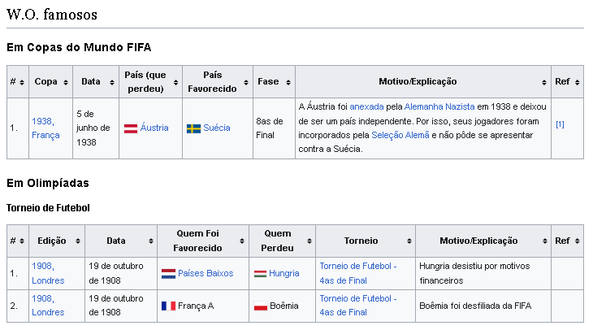

Saiba mais sobre o termo W.O. no futebol.
O W.O. ou walkover (em inglês) é a atribuição de uma vitória a uma equipe ou competidor
quando a equipe adversária está impossibilitada de competir. Isto pode acontecer devido
a não existência de um número mínimo de esportistas necessários para uma partida,
desqualificação, não-apresentação de uma equipe na data e hora estabelecidas, entre outros.
O termo é aplicável no futebol e em outros esportes, mas pode também ser utilizado em eleições
e eventos relacionados, como por exemplo, um debate pré-eleitoral.
No futebol, como exemplo, um W.O. pode ocorrer pela não-apresentação de uma equipe com no máximo
11 jogadores e no mínimo 7, dos quais um tem que ser o goleiro. Se no decorrer da partida jogar
com menos do que o mínimo (7 jogadores), seja por jogadores lesionados que não possam ser
substituídos ou por expulsões, a equipe também perde por W.O. (perdendo por 3 gols a 0).

W.O. duplo
O Campeonato Carioca de Futebol de 1998 foi marcado por diversos Walkovers, inclusive um WO
duplo num Fla-Flu, algo que nunca havia acontecido na história.
Um caso raro de W.O. duplo no futebol ocorreu no dia 11 de dezembro de 2016. Nessa data, as
equipes da Chapecoense e do Atlético Mineiro deveriam se enfrentar em confronto válido pela
última rodada do Campeonato Brasileiro de 2016. Ainda fortemente abalada pelo desastre aéreo
que vitimou 71 pessoas, a maioria jogadores e membros da comissão técnica, a equipe de Chapecó
decidiu não entrar em campo. Em solidariedade, o Atlético Mineiro optou por não enviar seus
jogadores à Arena Condá, onde seria realizada a partida.
Conforme determina o regulamento da CBF, o árbitro da partida anotou na súmula que nenhuma
das equipes compareceu ao estádio, e ambas foram declaradas derrotadas pelo placar de 3x0.
Na 4ª divisão do Campeonato Carioca aconteceram vários W.O. duplos, devido a dificuldades de
inscrições de jogadores e clubes que foram excluídos após três W.O.